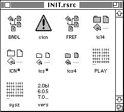

Legacy Document
Important: The information in this document is obsolete and should not be used for new development.
Important: The information in this document is obsolete and should not be used for new development.


Writing a System Extension
This section discusses
Before you begin to write a system extension, consider whether the feature that you have in mind is best governed by a system extension. A system extension does not enjoy the full status of an application. The user cannot launch a system extension. During system startup, each system extension is simply loaded and executed in a temporary heap that the system deallocates after the extension is called.
- the profile of a system extension
- the user interface for a system extension
- how to create additional resources for a system extension
- how to compile a system extension
Profile of a System Extension
A system extension is a file (of file type 'INIT') containing a code resource of type 'INIT' and additional other resources. A system extension typically contains code that provides a system-level service, such as a printer driver or a patch to a system software routine, and it contains code that loads this system-level service into the system at system startup time.Listing 9-1 illustrates code for a simple system extension called
MySampleINIT. When launched at system startup,MySampleINITloads theMyShutDownBeepcode resource into the system heap, installs a pointer to the shutdown code in the shutdown queue, and displays an icon indicating whether the installation succeeded or failed. TheMyShutDownBeepprocedure is executed just before the Macintosh computer shuts down or restarts. For more information about the shutdown process and the Shutdown Manager, see the chapter "Shutdown Manager" in Inside Macintosh: Processes.The code for
MySampleINITplaces theMyShutDownBeepprocedure in the system heap, making this procedure available after system startup. TheMyShutDownBeepprocedure callsSysBeepjust before the Macintosh computer shuts down or restarts.Listing 9-1 The MySampleINIT system extension
UNIT MySampleINIT {write a Pascal system extension as a UNIT} INTERFACE USES Types, Events, Errors, Resources, Memory, Shutdown; CONST kIconIDSuccess = 128; {icon of this system extension} kIconIDFailure = 129; {icon of this system extension } { with an "X" on it} kMyShutDownResourceType = 'SHUT' kMyShutDownResourceID = 128; moveX = -1; IMPLEMENTATION PROCEDURE MyShowINIT(theIcon, moveX: Integer); EXTERNAL; PROCEDURE MyShutDownBeep; FORWARD; PROCEDURE MyINIT; VAR theIcon: Char; myShutDownCodeHndl: Handle; myShutDownCodePtr: ProcPtr; BEGIN theIcon := kIconIDSuccess; {retrieve a handle to MyShutDownBeep procedure} myShutDownCodeHndl := GetResource(kMyShutDownResourceType, kMyShutDownResourceID); IF ((myShutDownCodeHndl = NIL) OR (ResError <> noErr) ) THEN theIcon := kIconIDFailed; IF (theIcon = kIconIDSuccess) THEN BEGIN {the MyShutDownBeep code resource is present, detach it} { from the resource file and check for an error} DetachResource(myShutDownCodeHndl); IF (ResError <> noErr) THEN theIcon = kIconIDFailed; ELSE ReleaseResource(myShutDownCodeHndl); END; IF (theIcon = kIconIDSuccess) THEN BEGIN MoveHHi(myShutDownCodeHndl); HLock(myShutDownCodeHndl); END; MyShowINIT(theIcon, moveX);{place the icon at boot time} {install MyShutDownBeep procedure into shutdown queue} myShutDownCodePtr := myShutDownCodeHndl^); ShutDwnInstall(myShutDownCodePtr, sdOnUnmount); END; PROCEDURE MyShutDownBeep; BEGIN SysBeep(40); END; END. {of UNIT}Notice that the code for theMySampleINITextension is defined as a PascalUNITrather than aPROGRAM. This distinction is important because Pascal programs are applications that require an application heap, an initialized A5 register, the Segment Loader, and the services of other Operating System and Toolbox managers. By comparison, a Pascal unit is merely a collection of routines. It does not enjoy the full status of an application. You cannot launch a system extension. It is simply loaded and executed in a temporary heap that the system deallocates soon after the system finishes booting the computer.When
MySampleINITcalls the application-defined procedureMyShowInit,MyShowInitdisplays an icon on the bottom left of the startup screen, and it does not erase the screen. If you want an icon displayed at system startup time, you must supply this application-defined procedure.
For information about compiling system extensions, see the section "Building a System Extension" beginning on page 9-17.
- IMPORTANT
- If you provide a procedure that displays an icon of your system extension, do no erase the screen.

Because a system extension possesses no A5 world of its own, it cannot easily define global variables: the system allocates no space for them, and the A5 register contains no meaningful value. Extension code that defines global variables usually compiles and links successfully without a warning from the linker; however, the extension's global variables typically overwrite globals defined by the current application.
- Note
- System extensions are not well equipped to declare global variables and deal with the A5 world. Stand-alone code modules that do these things are not system extensions and thus are beyond the scope of this discussion. See the chapter "Writing Stand-Alone Code" in Building and Managing Programs in MPW for information on this topic.
As a general rule, a system extension can call Operating System managers at any time, but it can call only a few of the Toolbox managers before the startup process completes. It can call the routines from the File Manager, Memory Manager, Resource Manager, and the Notification Manager before the system extension is completely launched, but it must refrain from calling the
- WARNING
- Code containing references to global variables defined in the MPW libraries, such as QuickDraw globals, generate fatal link errors.
InitFonts,InitWindows,InitDialogs,InitMenusandTEInitprocedures, as well as other QuickDraw, Window Manager, Dialog Manager, and Font Manager routines. (Note that the code installed by a system extension can utilize the full set of Operating System and Toolbox routines.)A system extension must do without the services of the Segment Loader, which divides application code into segments that the processor can handle. The size of a system extension's code resource should not exceed 32 KB.
You should consider installing your system extension in the system heap if you want its resources to be available after the computer finishes booting. For example, some system extensions leave routines in the system heap that can be called through patches to those routines. The
MySampleINITsystem extension shown in Listing 1-1 on page 9-11 loads theMyShutDownBeepprocedure in the system heap.The procedure your system extension uses to install code in the system heap varies according to what you want to accomplish. Basically, you have to request a block of memory in the system heap and store the code or resources you want to preserve in the block. To allocate memory in the system heap in System 7 and later, you merely need to call the appropriate Memory Manager routines, and the system heap expands dynamically to meet your requests. In earlier versions of system software, you must use a system heap space resource of type '
sysz' to indicate how much the Operating System should increase the size of the system zone.See the chapter "Memory Manager" in Inside Macintosh: Memory for details on how to allocate memory in the system heap.
Defining the User Interface for a System Extension
The user interface for a system extension consists of
You should provide an icon for the file that contains your system extension. An extension icon looks like a puzzle piece. Figure 9-1 illustrates the default icon for a system extension that appears in the Finder if you don't supply a custom icon for your system extension. You can customize an extension icon by adding a graphic to the default icon. You can display the system extension icon in a horizontal or vertical orientation with the protruding part facing any direction. If you do add graphics, keep them simple so that the icon still looks good when scaled to the small, 16-by-16 pixel icon size.
- the system extension icon
- other elements your system extension needs to communicate with the user
Figure 9-1 The default system extension icon
The code in your system extension should also display the icon for your system extension when it is first executed at system startup time. You typically display this icon near the bottom-left corner of the startup screen. If the code installed by your extension requires resources or hardware that is not available at system startup, your extension can instead display a crossed-out version of the system extensions icon in the bottom-left corner of the screen.
You should design a system extension so that a user can install it by dragging the icon on top of the System Folder. The Finder then asks the user whether to place the system extension in the Extensions folder. Do not install system extensions in the System file.
When designing a system extension, avoid displaying dialog or alert boxes that interrupt system booting. Whenever possible, use the Notification Manager to notify users of important messages. See the chapter "Notification Manager" in Inside Macintosh: Processes for a description on how to send a notification request. You should also avoid calling routines like
InitWindowsthat wipe the entire screen clean, obliterating any startup icons that other system extensions and drivers might have displayed.Your system extension may only create files in the Preferences folder during execution. It is important that your system extension does not create files in the Extensions folder, the Control Panels folder, or the System Folder during execution. The system reads the files in each of these folders sequentially. Creating an additional file in one of these folders shifts the location of the other files, causing the system to either skip a system extension or execute one twice.
If your system extension requires a user interface, you can also create a control panel. If you use a system extension with your control panel, include it in the control panel file along with the required resources and any other optional resources you use. In System 7, system extensions can be installed in the Control Panels folder or in the Extensions folder (both of which are stored in the System Folder) or directly in the System Folder. However, if it contains a system extension, your control panel file must reside in the Controls Panels folder within the System Folder. At startup time, the system software opens files of type '
cdev' that reside in the Control Panels folder and executes any system extensions that it finds there. If the system extension portion of a control panel is not loaded at startup, the control panel won't function properly. For additional information about control panels, see the chapter Control Panels in Inside Macintosh: More Macintosh Toolbox.Creating a System Extension's Resources
A file comprising a system extension contains a resource of type 'INIT' and additional resources. A resource of type 'INIT' contains the code that loads the system-level service into the system at system startup time, and it often contains the code that provides the system-level service. You can use additional resources to describe the icons for the system extension, specify a version number and copyright information for the information window displayed by the Get Info command, increase the size of the system heap, and more.This list describes some of the additional resources you typically use when you create a system extension:
The '
- The version ('
vers') resource, which you can use to record version information for your system extension. The version resource allows you to store a version number, a version message, and a region code.- The bundle ('
BNDL') resource, which groups together your system extension's icons.- Icon family resources ('
ICN#', 'ics#',ic18', 'ic14',ics8', and 'ics4') to represent your system extension in the Finder.- The system heap space ('
sysz') resource.
sysz' resource is described in this section. See the chapter "Finder Interface" in Inside Macintosh: Macintosh Toolbox Essentials for additional information about the other resources mentioned in this section.Figure 9-2 shows a ResEdit window containing additional resources for a system extension. These additional resources can be compiled with an
'INIT'resource into a system extension that goes in the Extensions folder.Figure 9-2 Typical resources for a system extension

Not all of the resources in Figure 9-2 are required for all system extensions, but they do add useful features to a system extension.
- Note
- You can use a high-level tool such as the ResEdit application, which is available through APDA, to create your resources. See ResEdit Reference for details on using ResEdit.
Creating Icons for a System Extension
You should provide two sets of icons for your system extension:
You should provide icon family resources for the file that contains your system extension. See the chapter "Finder Interface" in Inside Macintosh: Macintosh Toolbox Essentials for a detailed description of the icon family resources.
- an icon family for the file that contains your system extension
- an icon that your system extension displays at system startup time. This icon indicate whether the installation succeeded or failed
You can create a color icon resource of type '
cicn' for your system extension if you want to display a color startup icon at the bottom left of the screen. You can implement this feature by creating your own application-definedMyShowINITprocedure, or you can use a similar program calledShowInit. You can obtain theShowInitprogram from various on-line services. (You can also contact APDA for further developer product information). To useShowINIT, you pass the resource ID of your system extension's 'cicn' resource to theShowINITprocedure, andShowINITdisplays the 'cicn' icon on the bottom-left corner of the screen.Creating a System Heap Zone Resource for a System Extension
You should read the information in this section only if you plan to install code from your system extension into the system heap and run your system extension on system software prior to System 7.If you install code in the system heap and run your system extension on system software prior to System 7, you should include a system heap space resource of type '
sysz'. The 'sysz' resource tells the system software the amount of memory the system heap needs to expand by, in order to accommodate space for code installed by your system extension.
Using a '
- Note
- It is not necessary to include a '
sysz' resource for system extensions running only on System 7 and later. The system heap in System 7 grows dynamically and expands as long as there is any unused RAM available.sysz' resource, you can request the system software to increase the memory in the system heap by the amount specified in the 'sysz' resource. If the system software is able to allocate the needed memory in the system heap, your system extension will execute. If the system is unable to allocate the extra memory to the system heap, your system extension will not be able to execute.To create a '
sysz' resource, you can use an editor like the ResEdit application. Specify, in bytes, the amount of memory you want the system heap to increase by. For example, if your system extension takes 8 KB to execute, you should increase the system heap by that amount.You do not need to allocate memory for the actual system extension code ('
INIT' resource), only for the amount of memory for any code installed by your system extension needs to execute.Building a System Extension
Once you have created a file containing the 'INIT' resource and a file containing all the additional resources, you can build your system extension. To build a system extension, compile and link the'INIT'resource and the additional resources into an executable file for your system extension.When you compile the '
INIT' resource and your additional resources, you should keep the following points in mind:
- Make sure that the file type of the system extension is of type '
INIT'.- Specify a creator if you want the Finder to use icons for your system extension.
- Specify the resource type '
INIT' and a resource ID (usually 128).- Specify the main entry point for your system extension. When written in Pascal, the main entry point of a module is the first written instruction.
- Specify that the '
INIT' resource be loaded into the system heap if you want its resources to be available after the computer finishes booting.- Specify the '
INIT' resource (code resource) as locked to prevent the system from moving the resource during execution.- Make sure that all additional resources are unlocked and purgeable.